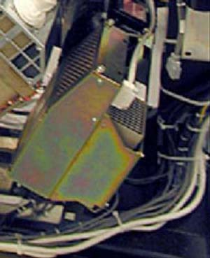
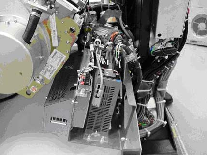
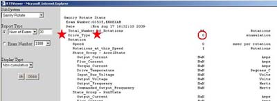

Operating Documentation
Direction 5193574-800, Rev# 22
LightSpeed 7.X Service Methods
Module Version 1.0, Version Date 5/7/10
Operating Documentation |
This procedure is used to help identify which axial drive is present on the CT system. The type of drive will determine which sub-component replacement procedures are necessary.
| Last Revised | September 29, 2009 |
Visually inspect the axial drive in the gantry. If the drive looks like Illustration 1, it is the Allen Bradley Drive. All sub-component replacement procedures for this drive will read, “Axial Drive...”.
If the drive looks like Illustration 2, it is the 2010 drive. All sub-component replacement procedures for this drive will read, “2010 Axial Drive...”.
Illustration 1: Allen Bradley Axial Drive

Illustration 2: 2010 Axial Drive

Go to the Diagnostics tab on the Common Service Desktop.
Go to the RTS Viewer and select Gantry Rotate in the subsystem pull-down menu. (It should be the first selection.)
In the Display Type field, choose Non-cumulative and then hit OK.
Refer to the illustration below to determine the drive type field.
Illustration 3: Gantry Information

If the Drive Type field on the fifth line of the page displays 0, the drive is an Allen Bradley drive. All sub-component replacement procedures for this drive will read, “Axial Drive...”.
If the Drive Type field at the top of the page displays 1 , the drive is a 2010 drive. All sub-component replacement procedures for this drive will read, “2010 Axial Drive...”.